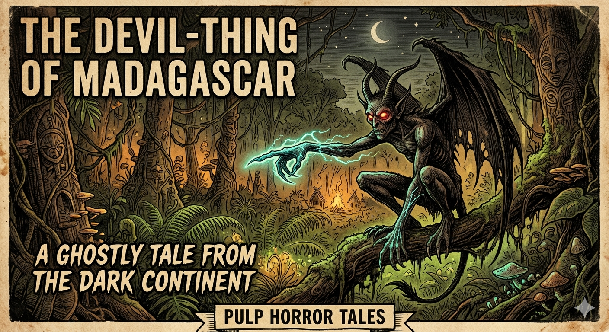
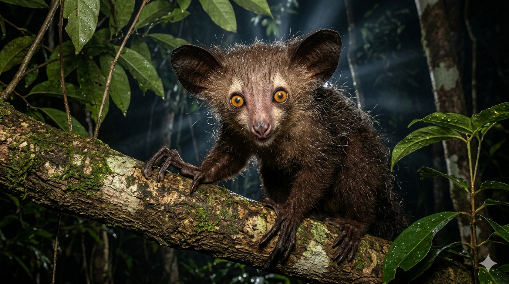

האיי-איי
משד המוות המסמן באצבעו ועד לפלא האבולוציוני של מדגסקר
מחקר אטימולוגי: מקור השמות
השם המדעי הטקסונומי: Daubentonia madagascariensis
השם המדעי הוא שילוב של מחווה לחוקר טבע צרפתי דגול וציון המיקום הגיאוגרפי האנדמי (היחיד בעולם) שבו החיה חיה:
- Daubentonia: שם הסוג הוענק כמחווה לזואולוג והרופא הצרפתי לואי-ז'אן-מארי דובנטון (Louis-Jean-Marie Daubenton, 1716–1800), שהיה מחלוצי האנטומיה ההשוואתית ושותפו של חוקר הטבע המפורסם בופון.
- madagascariensis: שם המין מתייחס למקום חיותו הבלעדי של היצור – האי מדגסקר (הסיומת הלטינית "ensis" פירושה "שייך ל-" או "מגיע מ-").
השם הנפוץ: Aye-aye (איי-איי)
- מקור השם (מלגשית): השם מגיע משפתם של ילידי מדגסקר. רוב הבלשנים מעריכים כי מדובר בקריאת פחד או אזהרה ("Hai-hai" או "Hay-hay") שהילידים היו משמיעים כשנתקלו ביצור הלילי הזה ביער, כדי להזהיר אחרים או לגרש את ה"שד". סברה אחרת טוענת שזהו פשוט חיקוי (אונומטופיה) של צליל הציוץ המוזר שהחיה משמיעה.
תגלית מוזרה למדע האירופאי
עבור תושבי מדגסקר, היצור מעולם לא היה תגלית – הוא היה סיוט יומיומי. אך המדע המערבי פגש בו לראשונה בשנת 1780.
החוקר הצרפתי פייר סונרה (Pierre Sonnerat, 1748–1814) סייר במדגסקר וקיבל לידיו פרט אחד שהמקומיים לכדו (למרות פחדם העצום ממנו). סונרה העביר את הפוחלץ בחזרה לצרפת. בתחילה, המדענים היו כה מבולבלים מהאנטומיה שלו (שיניים של מכרסם, זנב של סנאי, אצבעות של קוף ופנים דמויות עטלף) שהם סיווגו אותו בטעות כמכרסם! רק עשרות שנים מאוחר יותר התברר שהאיי-איי הוא למעשה פרימט – מין ייחודי וקמאי של למור.
מיתוס שד המוות מול המציאות
האגדה (טאבו הפאדי - Fady): בתרבויות המלגשיות (כמו שבט הסקלאבה), האיי-איי נחשב להתגלמות רוע טהור ולמבשר מוות. המיתוס גורס שאם האיי-איי מכוון את האצבע האמצעית והגרמית שלו לעבר אדם – אותו אדם נידון למוות מיידי וקליל. בשל אמונה קשה זו, ילידים רבים נהגו לצוד ולהרוג את האיי-איי ברגע שראו אותו, ותלו את גופותיהם בצמתים כדי להרחיק את ה"עין הרע", מה שהביא את המין לסף הכחדה.
המציאות: האיי-איי הוא יצור עדין לחלוטין, ביישן, ואינו מסוכן כלל לבני אדם. האצבע ה"מכושפת" שלו היא למעשה אחד הכלים האבולוציוניים המבריקים ביותר בטבע, המשמשת לחיפוש מזון!
מאפיינים ביולוגיים: הפרימט הלילי הגדול בעולם
- ליקוט בהקשה (Percussive Foraging): זו המטרה האמיתית של ה"אצבע המכושפת"! האיי-איי מקיש על גזעי עצים עם אצבעו האמצעית (עד 8 פעמים בשנייה!), מקשיב בעזרת אוזני העטלף העצומות שלו להדים, וכך מאתר חללים ריקים שבהם מסתתרים זחלים.
- "חכת" ציד מובנית: ברגע שזיהה זחל תחת הקליפה, הוא קורע את העץ עם שיניו החזקות, ומחדיר את אותה אצבע אמצעית (שיש לה מפרק כדורי גמיש המאפשר לה להסתובב 360 מעלות) כדי "לדוג" את הזחל החוצה.
- שיניים של מכרסם: בניגוד לכל שאר הפרימטים, שיניו החותכות צומחות ללא הרף במהלך כל חייו (כמו של בונה), מה שמאפשר לו לפעור חורים בעץ הקשה ביותר.
זואולוגיה ומחזור חיים (תעודת זהות)
תיעוד חזותי (לחץ להגדלה)

המיתוס: "השד המסמן למוות"

המציאות: צייד הזחלים האבולוציוני